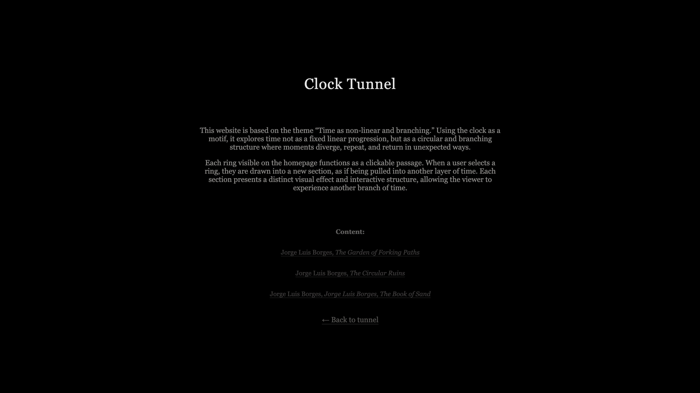
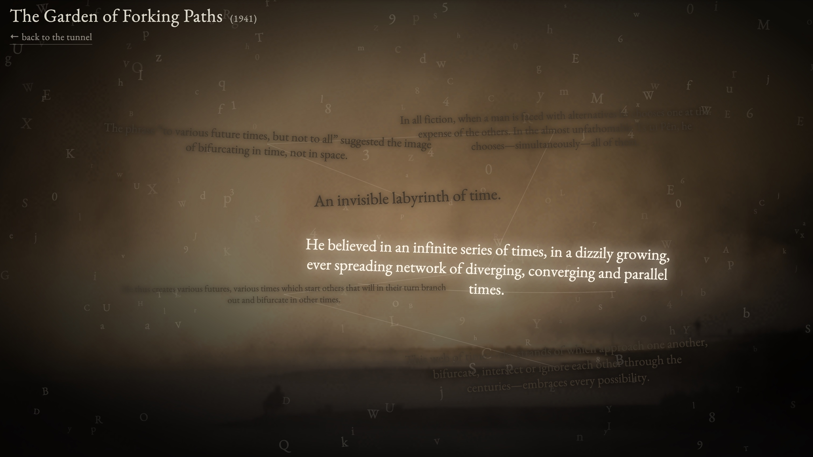
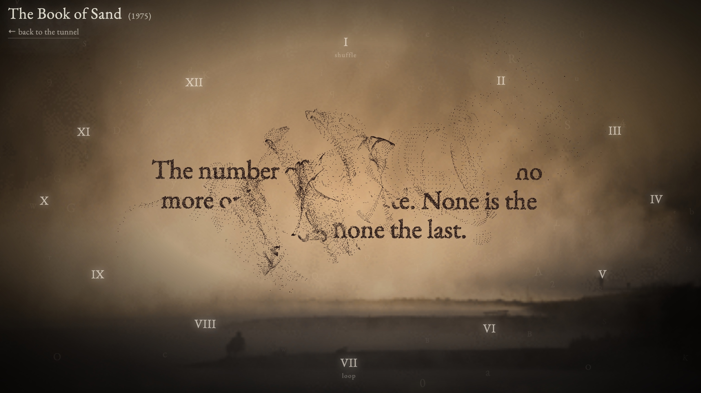
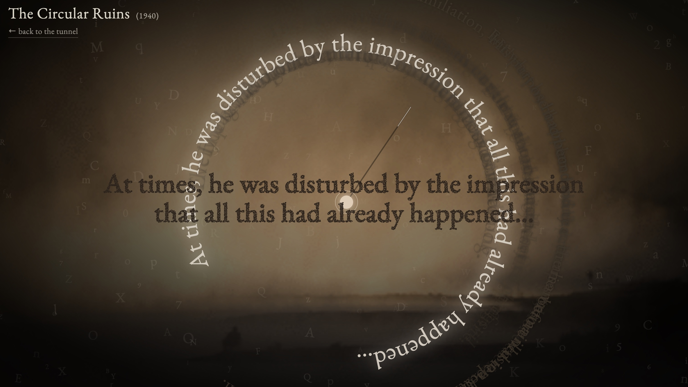

Clock Tunnel
Clock Tunnel is an interactive typographic website that explores the concept of nonlinear time. The project visualizes time as a layered and recursive structure rather than a linear progression. The interface is built around concentric clock-like rings, where users navigate through time by scrolling, dragging, and clicking. As interaction unfolds, fragments of text appear, disappear, and disperse like sand, referencing Borges’ narratives such as The Circular Ruins, The Garden of Forking Paths, and The Book of Sand.
Selected Views




Concept
Inspired by the nonlinear and recursive narratives of Jorge Luis Borges, Clock Tunnel challenges conventional modes of reading that rely on fixed order and linear progression. Instead of guiding users through a predetermined sequence, the project proposes a fragmented structure in which meaning is assembled through interaction. Time is not presented as something stable or universally shared, but as a shifting condition shaped by perception and interpretation. Each encounter reorganizes fragments differently, producing multiple possible readings rather than a single coherent narrative. By disrupting familiar reading patterns, Clock Tunnel reframes time as an experience that is actively constructed—fluid, subjective, and continuously redefined through engagement.